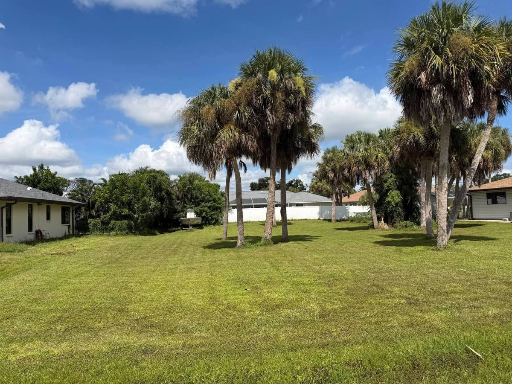
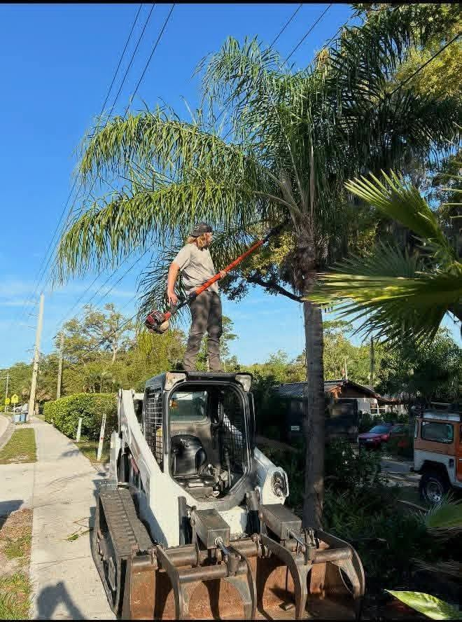
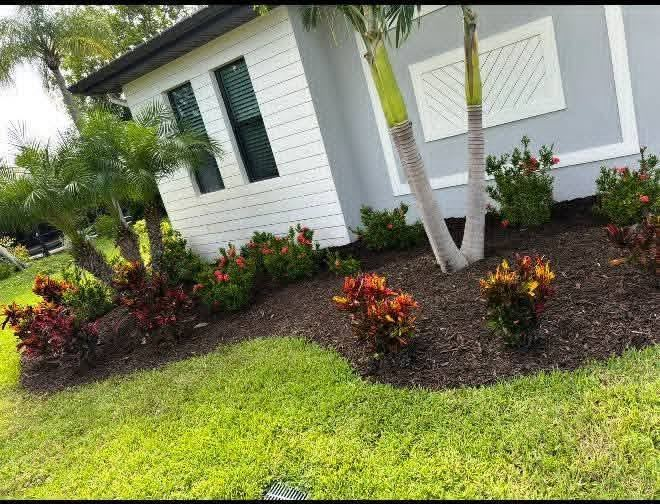
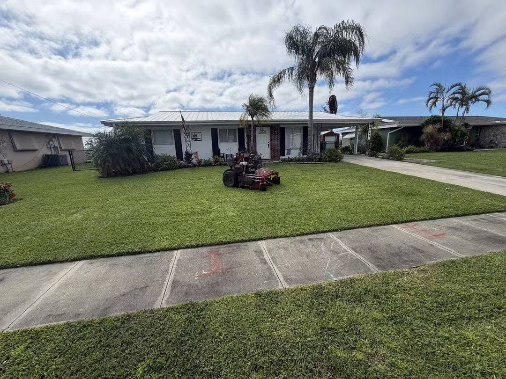
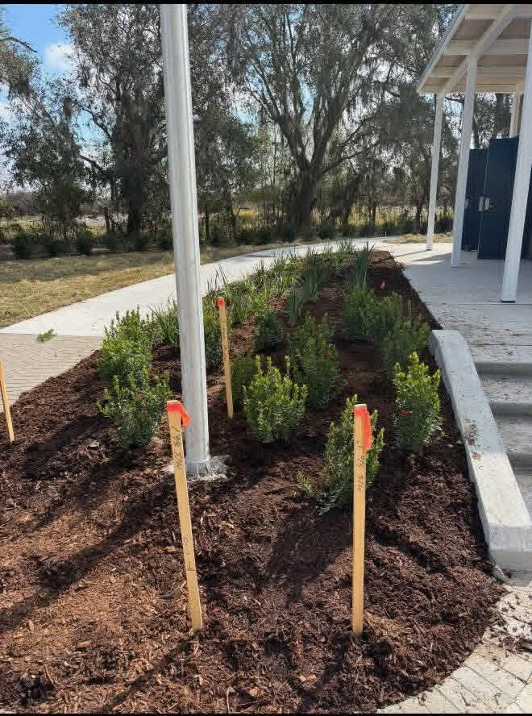
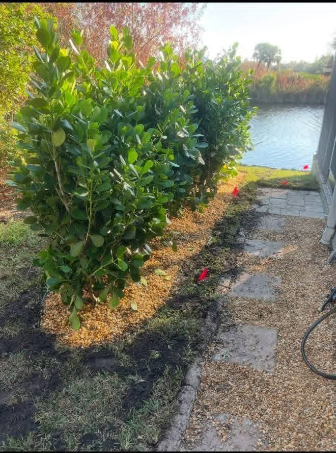
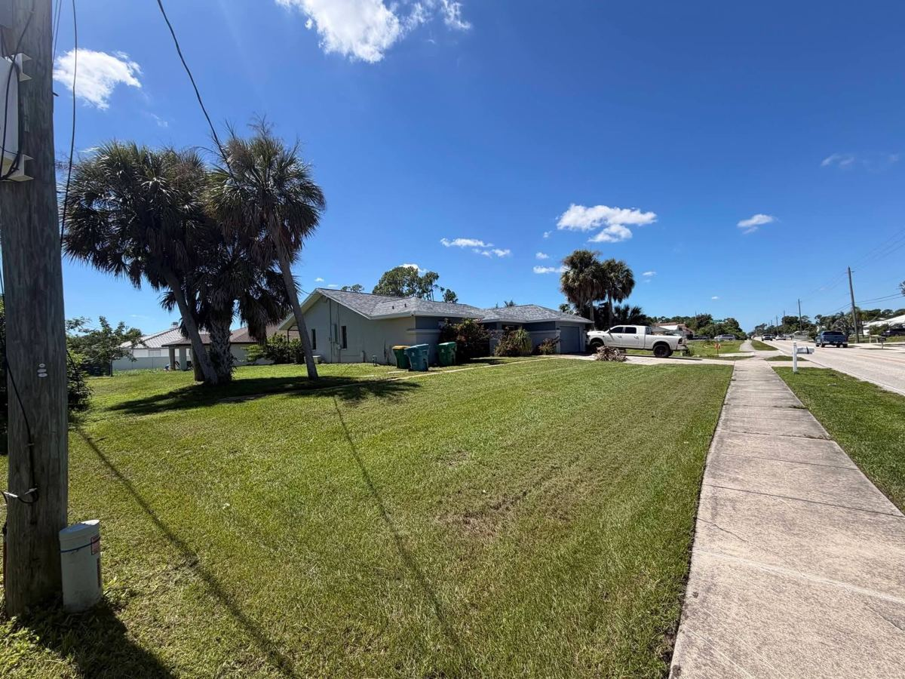
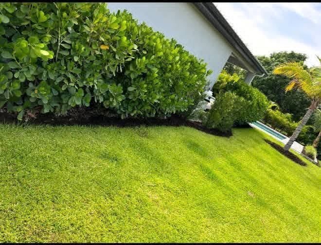

Landscape Design & Installation
Fresh beds, plants and layouts that boost curb appeal and fit the Florida sun.
Get a free estimate →
Beautiful Landscapes Begin Here! Lawn care, palm trimming, stump grinding, sod and full yard cleanups from an owner-operated crew serving Sarasota & Charlotte Counties.
Professional • Affordable • Quality You Can See
From weekly mowing to stump grinding, sod and junk haul-off, Dunning Premier Landscape handles the whole property so you don't have to juggle three different companies.
Fresh beds, plants and layouts that boost curb appeal and fit the Florida sun.
Get a free estimate →Mow • Blow • Edge • Weed Eat. Dependable recurring service that keeps your yard sharp.
Get a free estimate →Clean palm trims, tree trimming and removal for safer, better-looking properties.
Get a free estimate →Get rid of ugly stumps and trip hazards and reclaim your yard space.
Get a free estimate →Overgrown yard? We clean it up and haul off debris and junk in one visit.
Get a free estimate →New sod, fresh mulch, decorative rock and plant installs that look finished.
Get a free estimate →Complete property care and enhancements for homes, rentals and businesses.
Get a free estimate →Real jobs from around Sarasota and Charlotte Counties: fresh cuts, clean beds, trimmed palms and finished curb appeal.







See our latest jobs, fresh cuts and before-and-afters, and follow along for updates from Tyler and the crew.
Tyler Dunning is the proud owner of Dunning Premier Landscape, a professional lawn care and landscaping company committed to reliable service, quality workmanship and exceptional results.
Local lawn care, landscaping, tree and palm trimming, stump grinding and yard cleanups across Southwest Florida.
Lawn care, yard cleanups, sod and stump grinding across North Port neighborhoods, including lots that need clearing.
Mow-blow-edge service, palm trimming and landscape installs for Port Charlotte homes and commercial properties.
Curb-appeal landscaping, mulch, rock and plant installs, and storm cleanups throughout Venice.
Tree and palm trimming, yard cleanups and junk haul-off for Englewood homes and rentals.
Landscape design, sod installation and recurring lawn care for Punta Gorda properties.
Stump grinding, yard cleanups and landscape installation for Sarasota residential and commercial clients.
Also serving Deep Creek, Nokomis, Osprey, Rotonda West and nearby communities. Not sure if you're in range? Text (941) 408-4609.
We serve Sarasota and Charlotte Counties, including North Port, Port Charlotte, Venice, Englewood, Punta Gorda, Deep Creek and Sarasota. If you're nearby and not sure, call or text (941) 408-4609.
Yes. New clients get a free estimate. Call or text (941) 408-4609, or send the quote form with a few details about your property.
A yard cleanup usually covers clearing overgrowth, pulling weeds, trimming shrubs and palms, edging, and hauling away debris. We can also remove junk and refresh beds with mulch or rock in the same visit.
Stump grinding leaves a pile of wood chips where the stump was. We can rake the area clean, haul off the chips, or leave them as mulch, depending on what you want.
Yes, if you want usable yard space. Grinding removes the trip hazard, stops new shoots, and lets you lay sod or plant over the spot, usually faster and cheaper than digging the whole stump out.
Yes. We remove old or dead grass, prep the soil, and lay fresh sod, and we can add mulch, plants or rock around it to finish the look.
Yes. We handle residential and commercial property care, from routine mowing and trimming to full landscape enhancements.
The fastest way is to call or text Tyler at (941) 408-4609. You can also fill out the quote form on this page and we'll get back to you.
Tell us what your yard needs. New clients always get a free estimate. Prefer to talk? Call or text Tyler directly.
(941) 408-4609